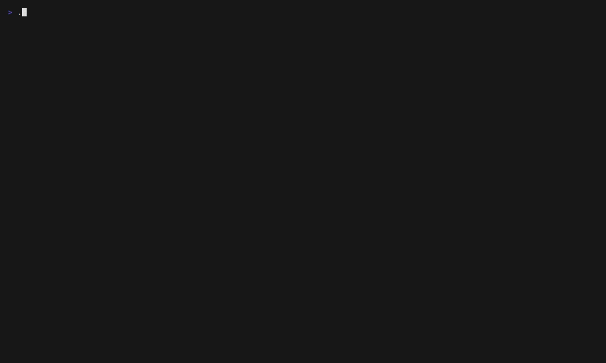

REPOGARDEN
RepoGarden is a local-first pixel habitat where your repositories become tiny deterministic invader creatures. The default isn't a dashboard — it's a living scene that helps you notice projects, recover context, and resume with a small next move.
install · one line
$ npm install -g @outsideheaven/repogarden && repogarden
Needs Node 24+, git on PATH, and a
terminal at least 80×24.
preview · the habitat, populated

three lenses on the same set of repos
Garden g
Repos as wandering pixel creatures in a starry field. Each look — shape, color, blink — reflects branch state, recency, and dirty files. Press ↵ to drop into one.
Shelf g g
The same repos as a tidy list — sortable, scannable, the answer to "wait, what was I working on last week?"
Journal g g g
An append-only log of what happened across your projects. Commits, branch hops, notes. A breadcrumb trail back into context.
first 5 minutes
- Run repogarden.
- When asked, give it a folder that contains git repos — e.g. ~/repos or ~/code. Multiple paths work too.
- The garden fills with one creature per repo. Use ↑ ↓ to move between them.
- Press g to cycle Garden → Shelf → Journal.
- Press ↵ on a creature to drop into its workbench: portrait, notes, recent commits.
- Press ? for the keymap, s for settings, q to quit.
product guardrails
- The habitat is the product.
- The workbench is a utility room, not the main surface.
- If the home screen starts reading like a dashboard, the work is drifting.
local-first · nothing leaves your machine
RepoGarden stores app state under ~/.repogarden
and never modifies your git repositories. No repository contents are
sent to any RepoGarden-operated server.
- scans only the roots you configure
- reads branch names, commit subjects, dirty file names, and small diff previews — for display, locally
- can be reset entirely with
rm -rf ~/.repogarden - the optional Claude / Codex usage bar is off by default; when enabled it calls those providers' usage endpoints directly using their local CLI credentials
Details: SECURITY.md.
support
If RepoGarden makes exploring your repos a little more delightful, a star helps other people find it. If it's useful to you, you can support development via GitHub Sponsors or Ko-fi.